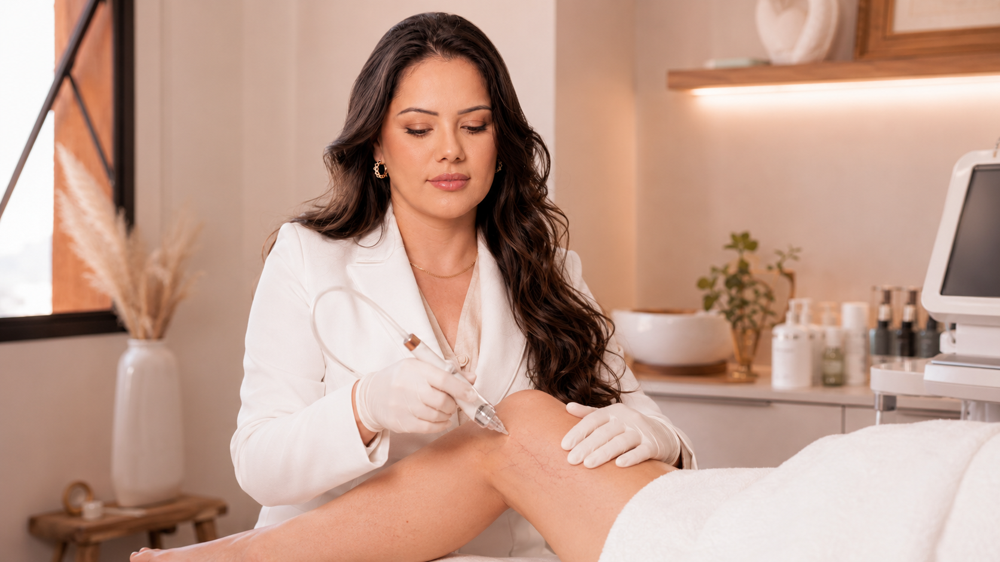
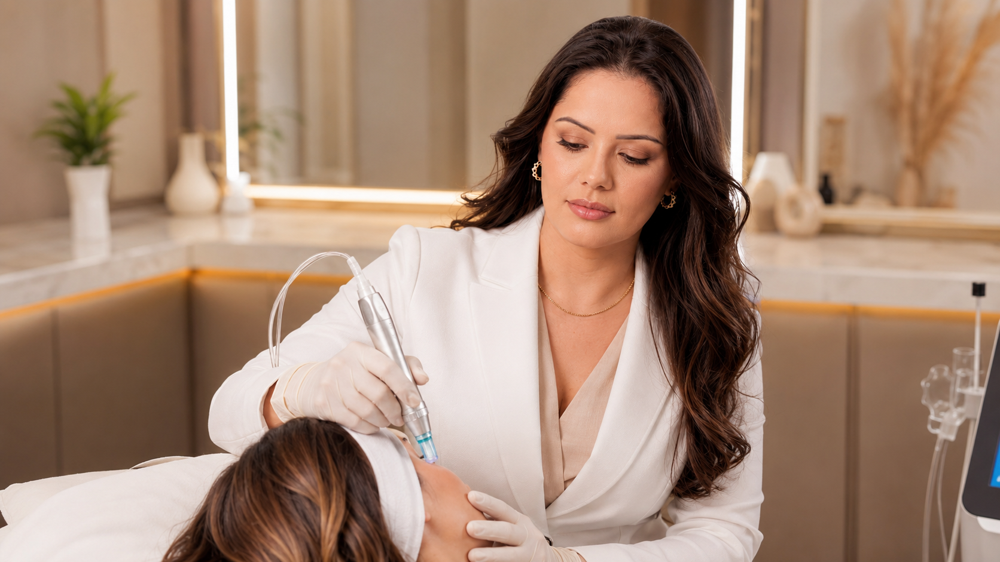

Primeiro, a avaliação. Depois, o próximo passo adaptado.
Uma consulta pode levar um processo, mas seu primeiro objetivo é promover clareza.

Cuidados
METODO DO CUIDADO
 Franciele Sofiati · Biomédica | Esteticista | Cosmetóloga
Franciele Sofiati · Biomédica | Esteticista | Cosmetóloga
Preparação prática e cuidados pós-procedimento, explicados de acordo com o tratamento realizado.
MINHA FILOSOFIA DE CUIDADO
Você não precisa saber o nome de um tratamento. Pode fazer uma mudança que percebeu, uma experiência anterior sobre a qualidade de uma conversa ou um resultado que gostaria de compreender.
Começo por esse contexto, em vez de direcionar você imediatamente a um processo.

Sua recuperação é apenas a atenção que o próximo tratamento.

COMO EU CONSTRUO UM PLANO
Compreender o que você está fazendo aqui e o que realmente importa.
Conversar sobre histórico, rotina, sensibilidades, contexto de saúde e momento adaptado.
Avaliar a pele, o coro cabeludo, o rosa, a área corporal ou a alteração vascular.
Esclarecer operações, limites, sensibilidades, riscos e recuperação.
Tratar, preparar, realizar em etapas, encaminar, observar ou esperar.
Uma consulta pode levar um processo, mas seu primeiro objetivo é promover clareza.
ANTES DO TRATAMENTO
Condições de saúde relevantes, alergias, medicamentos, suplementos, gravidez, amamentação e doenças recentes podem influenciar o planejamento.
Lasers, peelings, injetáveis, cirurgias, fios, tatuagens e reações anteriores podem continuar sendo relevantes.
Retinoides, ácidos, produtos para acne, fórmulas despiggmentantes e aparelhos de uso domético podem ativar a tolerância da pele.
Bronzeamento recente, queimadura solar ou atividades ao ar livre já planadas podem mudar o momento adequado do tratamento.
Viagens, trabalho, exercícios, apresentações e sessões de fotos ajudam a definir um período de recuperação adequada.
Conversamos sobre o que pode melhorar, o que talvez exija várias etapas e o que não pode ser prometido.
Prepare-se bem é uma forma tranquila de cuidar do resultado e de você.
TRATAMENTOS DIFERENTES, RECUPERAÇÃO DIFERENTES
Limpeza profundidade, descascando de diamante, descascando de cristal e descascando ultrassônico podeem exigir uma rotina simples e calmante, além da suspensão temporária de produtos irritantes.
Protocolos com ácido retinoico, solução de Jessner, TCA e atos despigmentantes variam em profundidade. Descamação, vermelho e restaurações de produtos dependentes do descascar realizado.
Redução de pelos, tratamento de pigmentação e renovação de corte ablativa com CO2 têm necessidades de recuperação muito diferentes.
Ultrasson focalizado, radiofrequência e tecnologias de plasma diferente quanto ao tempo, à profundidade, à sensibilidade e aos cuidados pós-procedimento.
Toxina botulínica, MMP e aplicações no coro cabeludo exigem orientações específicas sobre pressão, produtos e atividades.
Os cuidados após o PEIM dependem dos vasotratados, do esclerosante utilizado e da avaliação vascular individual.
BASE DOS CUIDADOS POS-PROCEDIMENTO
As orientações que formam o atendimento têm prioridade sobre as informações gerais do site.

Um cuidado suave e constante pode ser mais valor do que faz demais.

O QUE FAZER E O QUE EVITAR

Você só vai contar com apoio mesmo depois da sala de tratamento.
A VIDA DIÁRIA DURANTE A RECUPERAÇÃO
Atividades intensas podem ser necessárias após alguns injetáveis, tratamentos vasculares ou procedimentos de renovação cutânea mais profundos.
Banhos muito quentes, saunas, vapor e exposição prolongada ao calor podem não ser adaptados no início da recuperação.
Piscinas, banheiras de hidromassagem, lagos e o mar talvez precisom esperar cercar a barreira da pele estiver comprometida.
A maquiagem pode ser libertada rápidamente após alguns procedimentos e restringida depois de outros.
Os métodos de depilação podem precisar de ajustes antes e depois de laser, peelings ou renovação cutânea.
Não massageie áreas tratadas com injeção ou tecnologia de energia, salvação orientação específica.
Não imponho todas as reservas possíveis após todos os tratamentos. Explico apenas o que se aplica ao processo que você realizou.
Vento, sol intenso e lamanças de temperatura podem ativar o conforto durante a recuperação. Por isso, seu plano de cuidados pode incluir proteção adicional.
CONTATO E SEGURÂNCIA
Vermelho, calor, sensibilidade, inchaço, hematomas, ressecamento ou descamação temporárias podem ocorrer após alguns procedimentos. A resposta esperada depende do tratamento e deve ser explicada antes de você sair.
 Franciele Sofiati · Biomédica Esteticista
Franciele Sofiati · Biomédica Esteticista
Suas orientações consideram o processo, a sua pele e a recuperação plana.